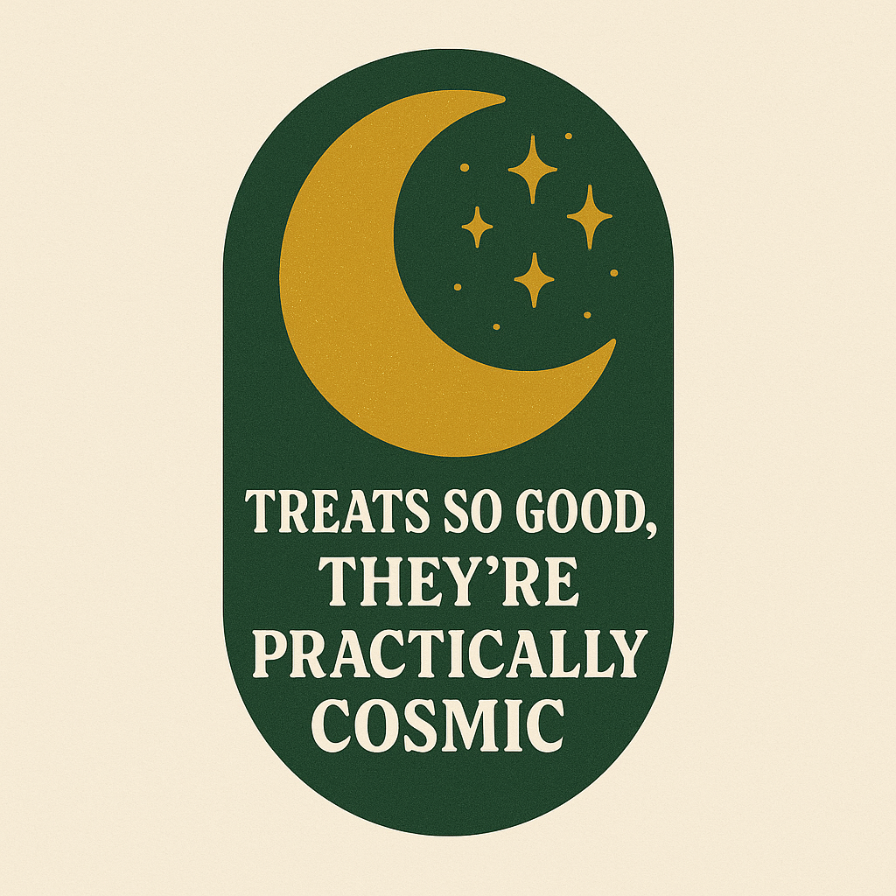
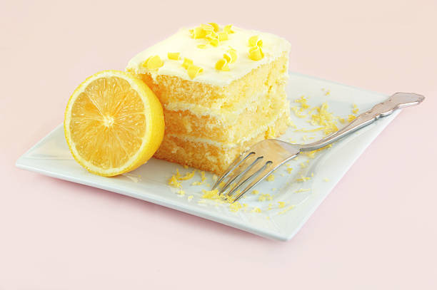

We are a small bakery offering deliciously baked goods and treats while striving to give back to the community. Our bakery offers a variety of baked goods, pastries, coffee and teas to provide to those that may need a pick me up in the morning or want some time with a comforting desert and drink. Please visit our menu to see what we offer in store and what we can offer upon request.
As stated, we also strive to give back to our community through fundraisers and various outreach opportunities. Please go to our community information page for more information.